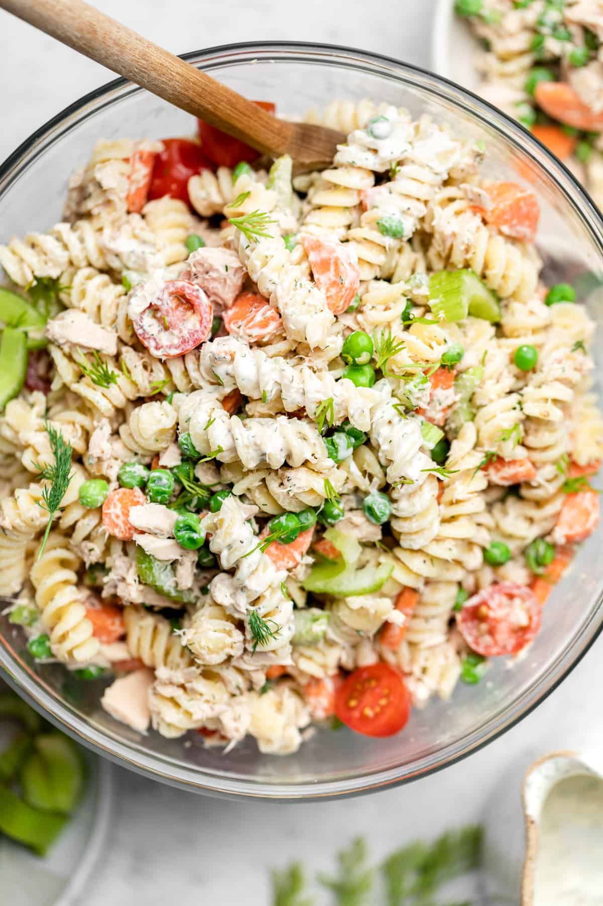

Tuna pasta salad

Ingredients
- Dressing
- 1 cup Greek Yoghurt
- 1/2 cup Mayo
- 1/4 cup Dijon Mustard
- 1/2 tbsp Lemon Juice
- 1/4 teaspoon Salt
- 1/4 teaspoon Black Pepper
- 1/4 teaspoon Dill
- 1 teaspoon White Wine Vinegar
- 1/4 teaspoon Garlic Powder
- a few grated Pickles
- 230 g Pasta
- 80 g Canned Tuna
- 1 cup Green Peas
- 1/2 cup Pepper
- 1/2 cup Red Onion
- 50 g Feta Cheese
- 50 g Hard Cheese
- 1/2 cup Cherry Tomatos
Steps
- Make a Dressing
- Mix all Dressing ingredients in a bowl
- Put the bowl in the fridge for 1-5 h
- Cook the pasta
- Put the pasta aside to cool down
- Chop all the vegetables
- Put the vegetables in a bowl and season with a teaspoon of salt
- After everything is cooled down, mix it all together